New York City thrives on its massive transportation network, moving millions across its boroughs daily. As part of PlaNYC’s push to improve quality of life and cut carbon emissions, the city has prioritized investments in public transit, walking, and biking. But despite these efforts, biking remains the least utilized option, with only 2.6% of commuters choosing it (PlaNYC). Currently, NYC heavily relies on its subway system, which includes 472 subway stations and over 3 million daily riders (MTA). Clearly, the subway is the backbone of NYC’s commute. While it’s a step in the right direction for energy efficiency, there’s still huge potential for an even greener system, one that better integrates bikes and makes use of existing bike infrastructure.
Though we would love to work with the city as a whole to try and increase everyone’s biking usage, launching a citywide campaign to promote biking comes with challenges. Mayor Adams once explored subsidizing CitiBike in 2021, but budget constraints kept it from moving forward (Brachfeld). Rather than tackling NYC as a whole, we thought a more practical starting point would be focusing on a specific community such as NYU. We hope to increase the percentage of biking commuters, and bikers in general, by better incorporating a biking program into NYU that is specifically aimed at undergraduate students.
By working with NYU and CitiBike, we can work to introduce a discounted or complimentary CitiBike membership for students, making biking a more convenient and affordable option. Using NYU as a pilot program, we can collect data on how improved access impacts student ridership. We also must increase the attractiveness of biking, since there are many associated fears. If successful, this could serve as a model for expanding bike access across the city, making sustainable transportation a more realistic choice for more New Yorkers.
Since the 1800s, when biking was first introduced in New York City, biking culture has undergone intense changes. At first, there were concerns that biking put everyone's lives at risk, so in 1880, officials tried to outlaw bikes from the city’s parks for the safety of everyone. Bikes were still used, however, to run daily errands and to feel a sense of freedom, specifically for women, minorities, and immigrants (Mcshane). Bikes stood as a symbol for these groups, since they provided a sense of belonging in a huge city.
This fear of biking lasted throughout the years, however, causing countless disagreements between politicians and residents, like in 1980 when cyclists had a sit-in on the Avenue of Americas to protest the removal of the bike lanes (Mcshane). As a result, actions were taken to find a middle ground that would let bikes coexist peacefully. In 1938, one of the first bike paths was introduced in Queens on the Northern State Parkway (Sixthreezero). In 2007, NYC added its first protected bike lane on 9th avenue (Mcshane). These two events on their own started the domino effect of building bike paths throughout the city. The history of biking is important in demonstrating how since change has been successful in the past, future change is possible, which is what we are asking you to help with today.
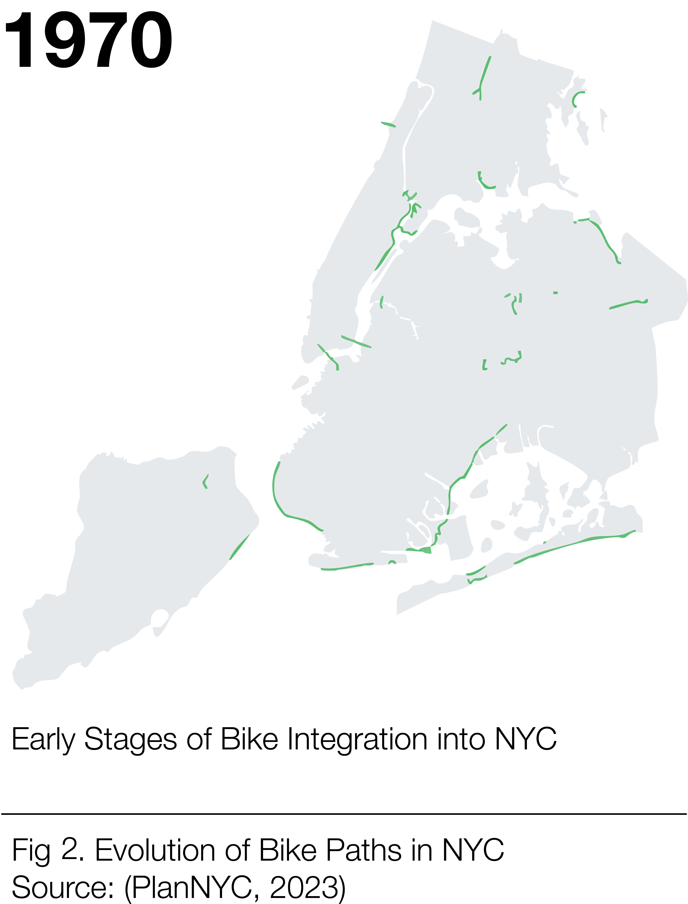
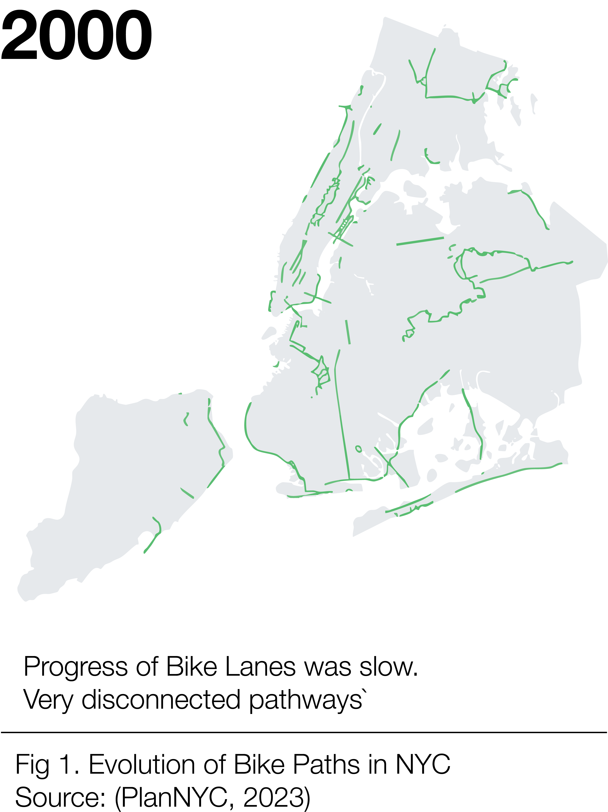
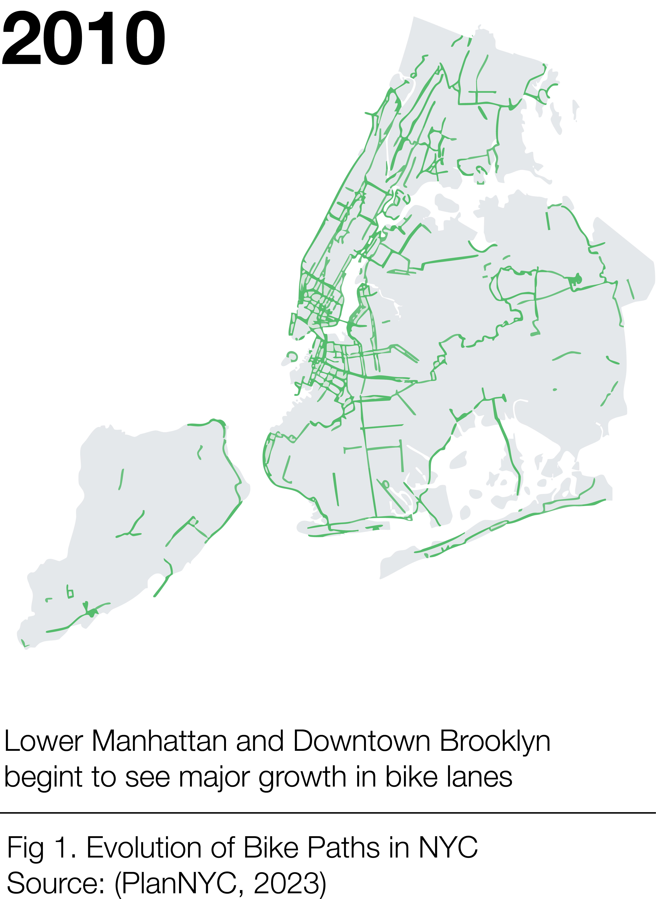
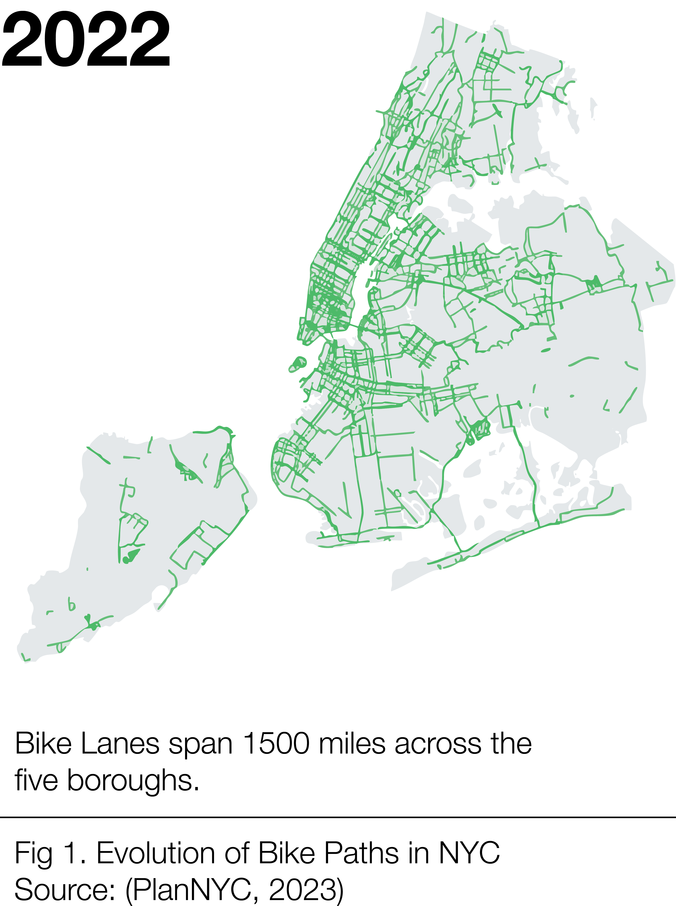
Change is possible; as of now, 1,240+ miles of bike lanes have been installed and more than 480 miles of these lanes are protected. Also, bike paths in parks have also been on the rise. This increase in bike lanes, as well as the introduction of bike sharing, has dramatically increased users. From 2012-2017, there was a 26% growth of bike riders, which is about 175,000 people, and the average annual growth of daily cycling was 9.1% (Cycling in the City). There was a news article published by BBC ("Why some bike shares work and others don't"), written by journalist Hope Ngo, the article explores bike share in different countries and attempts to draw conclusions on why certain rates of adoption are faster than others. The article also takes data from writer Derlie Mateo-Babiano, senior lecturer in urban planning at the University of Melbourne. Mateo-Babiano discovered a correlation between the length of road cycle lanes from a bike station greatly affected the usage of bikes supported by data taken from Germany and Netherlands (both countries which have found success with their bike share systems)(Ngo). In other words, the better the infrastructure the more the bikes are likely to get used. The data collected from the sources aforementioned surrounding the increase in bike lanes in NYC corroborates this finding. The increase in bike lanes in NYC is thanks to developments in the city’s infrastructure, accessibility, safety, and awareness. Nearly 1.9 million New Yorkers ride bikes, so streets need to be adapted to safely fit cars, bikes, and pedestrians (Bikes and Pedestrians). In September 2021, a new bike lane was introduced on the Brooklyn Bridge to allow for biking that did not intervene with other modes of transportation. This caused biking over the bridge to double (Bikes and Pedestrians). If these changes have been successful in the city, what is stopping NYU from integrating it into their university? We are hoping that we can bring these changes to NYU students by increasing the number of student bike users. We think that collaborating with a pre-existing company, like CitiBike, would be beneficial for finding a solution. Citi Bike was launched in 2013 and quickly became the biggest bike sharing system in North America, with 17.6 million Citi Bike trips in 2018 (Cycling in the City). We plan to grow this number by increasing the number of NYU CitiBike users, but this cannot be done without help from the company,
Biking culture in New York City has experienced significant growth over the past few decades. Efforts to expand bike lanes for enhanced safety, along with the creation of the Citi Bike share program, have played a crucial role in promoting biking as a viable mode of transportation. Despite these advancements, biking remains underutilized in the broader context, with only 26% of adults having ridden a bike in the past year (NYC DOT, 2021) and 2.6% of New Yorkers considering it their primary mode of transport (PlanNYC, 2023). Our research suggests that the primary barrier to wider adoption of biking is the fear of safety while riding. The above diagram illustrates the frequency amongst the 26% of New Yorkers who have ridden a bike in 2021. Almost 40% of the supposed bike riders say that they have used a bike only a few times within the year, further emphasizing the underutilisation of bikes in the city.
The above diagram illustrates the frequency amongst the 26% of New Yorkers who have riden a bike in 2021. Almost 40% of the supposed bike riders say that they have used a bike only a few times within the year, further emphasizing the underutilisation of bikes in the city.
There still are drawbacks of biking, but we can use them as a way to brainstorm how our solution can be successful. As previously mentioned, there were a lot of fears expressed about the safety of biking. When 3 pedestrians were killed by cyclists in the late 1900s, these fears grew dramatically (Sixthreezero). In 2024, over 19 bikers were killed and 339 were seriously injured thanks to lack of biking safety infrastructure (Record-Breaking). At this point, fears were at a high.
NYC roads are not meant to be shared. The city’s streets were originally designed to only fit traffic of cars, there are too many unprotected bike lanes, and there is no respect between bikers, drivers, and police (Infante). We realize that in order to have a successful solution for NYU students, we must figure out a way to mitigate these fears. NYC is constantly trying to increase safety for bikers by increasing protected bike lanes and making cycling the norm. By implementing NYC’s biking changes around Washington Square and MetroTech, more NYU students can increase their biking usage.
Not only has NYC undergone tremendous biking practice changes, but they are continuing their efforts in the future. The city is continuing to work to develop the city’s greenways and add more space for biking, specifically 100 miles of non-street bike lanes. This space does not interfere with limited-space streets which helps mitigate previously mentioned fears (Bikes and Pedestrians). NYC is also building its infrastructure around the growing biking community by continuing to brainstorm ideas of how to let vehicles, bikes, and pedestrians coexist (Sixthreezero). Also, bike sharing services are expected to expand, including increasing coverage areas of already existing services (Why You Should). Hopefully this expansion, as well as the city’s other future efforts, will include a solution to bring NYU students into the biking network, whether it be through a bike sharing program or by generally increasing students’ desire to bike.
Biking is one of the most effective and accessible ways to combat climate change, especially in densely populated cities like New York. Replacing even a single car trip with a bike ride can drastically cut down an individual’s carbon footprint by nearly 67% (How Riding). Cars emit nearly five metric tons of CO₂ per year (How Riding), and switching to bikes, which produce only about 21 grams of CO₂ per kilometer compared to 271 grams for cars, can significantly reduce the greenhouse gases contributing to global warming (Bike Portland). In fact, if more New Yorkers opted to bike for short errands or commutes, transportation-related emissions, one of the top contributors to climate change would greatly decrease (How Riding). The environmental benefits of biking extend beyond just CO₂ reductions. Biking instead of driving helps eliminate harmful chemicals, particulates, and nitrogen oxides from the air, which improves overall air quality and can reduce rates of respiratory illness and disease (How Riding). Programs like Citi Bike have already made a meaningful impact, cutting about 900 tons of CO₂ each month and saving over 30,000 tonnes of emissions over a four-year period (The Science Survey; Discovery UCL). On top of that, biking contributes to quieter, less congested neighborhoods. Unlike cars or even subways, which contribute to noise pollution, bikes offer a near-silent alternative, promoting a more peaceful and livable urban environment. By incorporating cycling into everyday routines, even if it's just once a week, individuals can help eliminate millions of tons of carbon emissions annually (How Riding), paving the way for a cleaner, quieter, and healthier city.
In order to make improvements to the current bike share systems at NYU and NYC, it is important to look into the integration of bike share in other countries around the world. Whilst different countries and cities are likely at different stages of bike adoption, it is useful to see the different approaches which countries are taking. Data sets from ten major cities were taken from their local bike providers as well as news articles to compare each cities progress towards incorporating bikes into the cities transportation network.
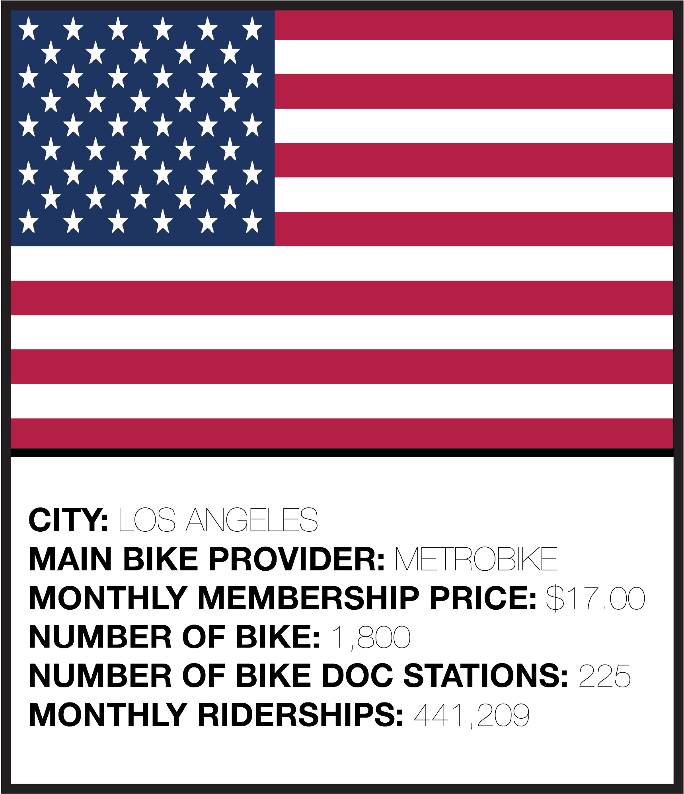
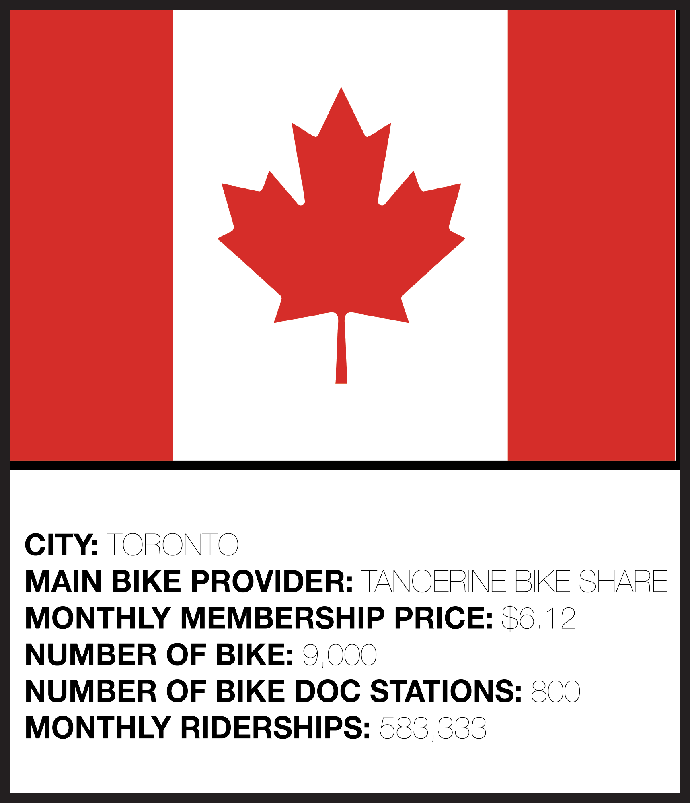
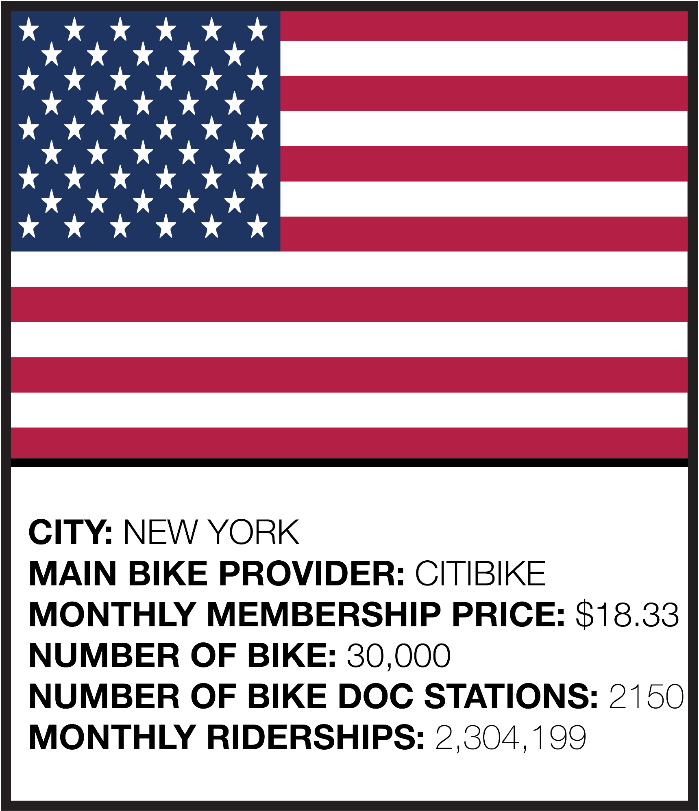
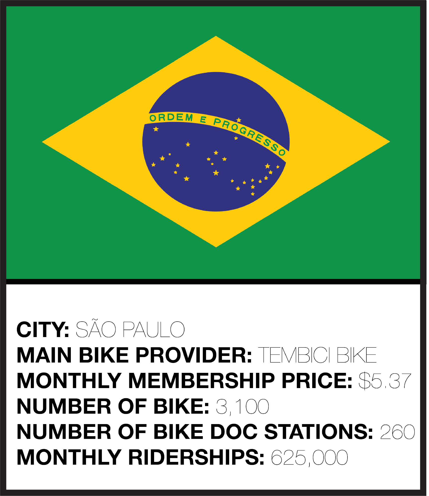
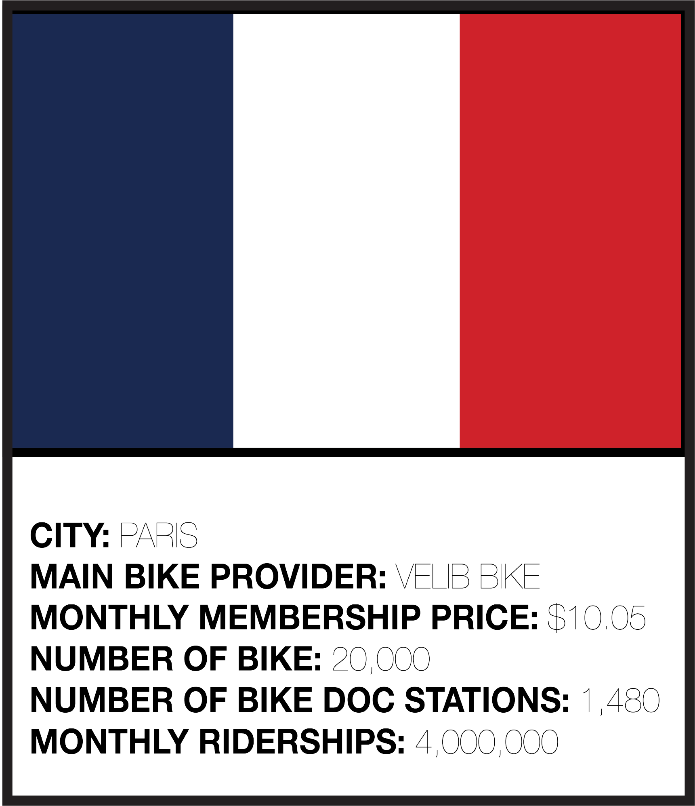
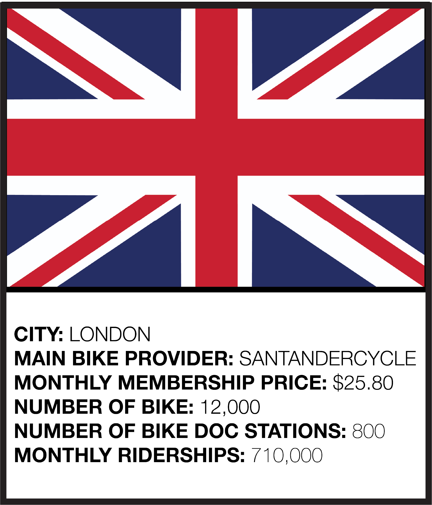
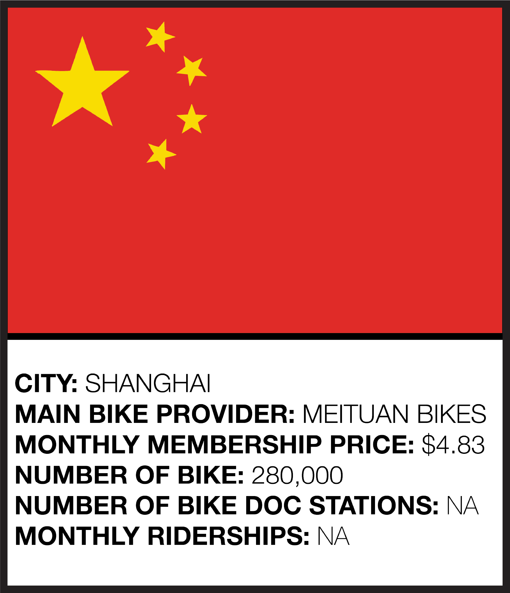
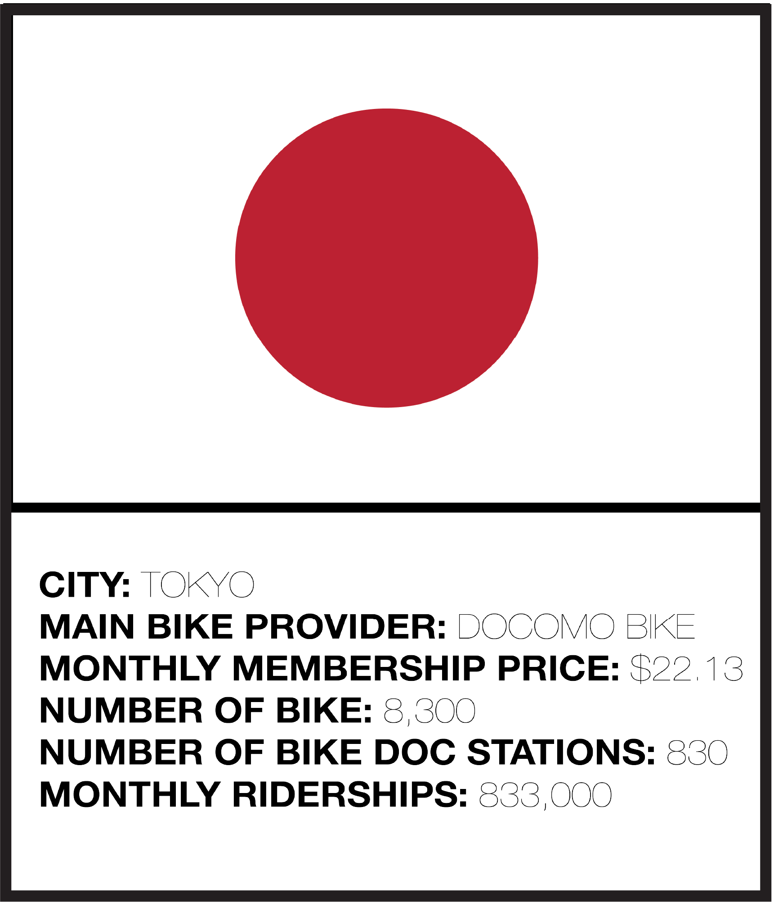
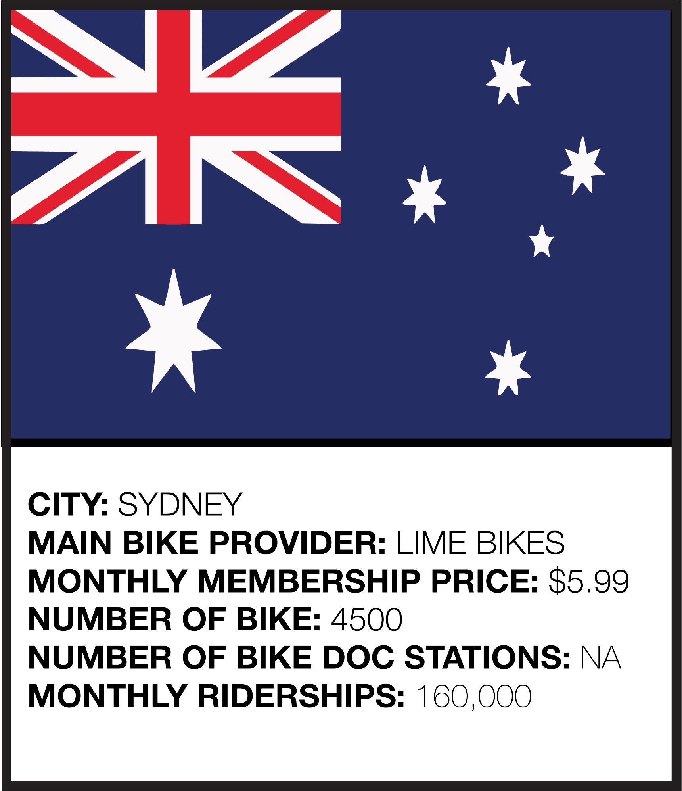
Majority of the statistics are from the bike share providers themselves however some data were sampled from city transportation reports as well as news articles. There was an effort to collect the most current data ranging from 2020 to 2024. Additionally whilst these statistics may show some trends such as correlation between membership price and the operating size of the bikeshare companies, it’s important to understand that conclusions purely from the statistics is not an accurate representation of the full situation as there are many other factors which play a role into understanding the different bike share markets such as government subsidies, average household income and even crime rates/road traffic incidents. However, what we can infer from the data is the development of bike share schemes within the city, which would later help aid the research on which countries we should learn from. From the data collected above, we can see that the top three cities outside of New York which have found the most success with bike share (in terms of monthly ridership and number of bikes in the city) are Shanghai, Paris and Singapore in no particular order. In the following section, we will dive further into these three cities, looking at what they have done well and how they can improve.
A surge in China's bike market started from 77 venture capitals seeking to fill the gap in the market (QPSoftware). The population itself has also seen a big surge in its public bike usage over the past years. As of 2022, China’s bike share market is the largest in the world with its leading public bike providers being Meituan Bikes. By 2019, bike sharing will become the third largest mode of transport in the country. Unlike New York and Paris with their bike docking system, for most instances the public bikes in China do not have designated docs allowing for open parking. Whilst convenient for users this has led to a major issue of bikes being left everywhere and becoming a burden to surrounding infrastructures. Since many startups tried rushing into the market with their own bike share, the ones who were unsuccessful ended up abandoning their bikes on sidewalks all around china leading to a “graveyard” of bikes. To address this issue, earlier this year in 2025, China updated the policy for electric bike trade-ins. Individuals who bring in their old bikes and purchase eligible new models are eligible for heavy subsidies. This initiative is to address the problem of having an abundance of obsolete electric bikes which may pose safety risks to the public. In 2024, 1.38 million electric bikes were exchanged with subsidy funds exceeding 600 million yuan.
Singapore’s current main bikeshare provider started as a local business funded on World-Car-Free Day in 2017 and has transformed into the bikeshare powerhouse, “Anywheel”. Such a densely developed bikeshare system in one of the smallest countries in the world is truly formidable. Now the question is what makes Singapore’s bikeshare system so successful. The Singapore Land Transport Authority (LTA), run by the Singapore Government, collaborates closely with Anywheel, ensuring proper management of the bikes within the city. The nature of anywheels operation sits in the middle of China's free parking scheme and New York’s designated docs. Bikes in Singapore can be parked at designated zones demarcated by QR codes. This method of operation is able to optimize efficiency and convenience whilst still keeping the city clean. It’s important to note that bikeshare businesses have tried in the past to enter Singapore’s market however have failed due to not being able to align with the LTA’s standards. In an transcribed article from a podcast featuring the founder of Anywheel, Htay Aung, Aung explains the process of acquiring bicycles which have integrated SIM cards and GPS-enabled locks as supposed to bluetooth ones (Htay) so that the bikes are able to report accurate live location to meet the LTA guidelines. The success of Anywheel derives from the close collaboration between Anywheel and the Singapore government as well as its extensive bike infrastructure consisting of over 600 km of bike paths (LTA). Whilst LTA doesn’t provide anywheel with any monterey funds, the shared equal responsibility towards the bikeshare system results in a polished integration of the bike share system within the nation.
The main bikeshare provider across the whole of France is a business called Velib. Compared to all the other bike share companies that have been looked at, Velib is far the oldest. Velib was started in 2007 and continues to flourish in the current market. Similar to the other cities we looked at, there is extensive bike infrastructure (1000 km worth of bike paths (González)) in Paris. Whilst it is true Paris does have one of the oldest biking cultures amongst these major cities, it is not purely the biking culture which has allowed for Velib to continuously grow to the state it is today. What is truly surprising is the fact that the trips made within Paris by bikes greatly surpasses that of cars (11.2% to 4.3% respectively(González)). If it isn’t obvious already, what allows Velib to flourish and continuously grow is monterey support from officials and the city mayor, Hidalgo. The city has plans to be completely suitable for two wheeled transports by 2026 (González)), 250 million has been set aside, 100 million more than the amount set in Hidalgo’s first time to accelerate the development and integration of bikes. The sophisticated bike network especially shines during rush hour with 18.9% of trips are made by bikes and only 6.6% by cars (González). However one issue which arises is that with a growing audience for bikes, the bike traffic becomes more dense and there is a need for more infrastructure to accommodate for the flow of these cyclists.
As seen from the research, all three of the cities above have taken very different approaches to bikeshare to reach success, whether that's through a competitive market leading to high saturation and accessibility, strong partnership between bike providers and the government, both monetary and non-monetary or sophisticated bike infrastructure. However it is important to not undermine the bikeshare system within NYC as it Citibike still one of the leading bikeshare providers around the world, however through the research we can delve further into how we can improve the existing bike network even further.
Whilst the ultimate goal is to benefit New York City as a whole, the scale for project violet wheels has been calibrated to focus on NYU in New York City to make the project more feasible and achievable in the given time frame. Similar to the research above on bikeshare systems in other countries, this section aims to look at existing bike programs in other colleges and take inspiration to form New York University’s very own bikeshare program/scheme on campus. The colleges which will be studied are as follows: Yale University, Stony Brook University and Binghamton University
Yale has a fully student run bikeshare program within their campus which is free of charge. Students can rent out the bikes for 11 hour time frames, on the premises that the students attend the bikes in a proper manner within that period of time. Yale’s bike share scheme is different from conventional standard bike schemes in the sense that you are able to choose and borrow out different style bikes previously donated by the students. What is fascinating about the project is that the bikeshare program is run independently from Yale University, it is a completely student led program without any monetary endorsement. Recognizing the capital-intensive and financial barrier of running a large scale bikeshare program, the Yale Student Bikeshare seeks to redefine what it means to have a "bikeshare" on Yale's campus (Yale Student Bikeshare).
Stony Brook University offers a comprehensive school bike share program. Students have to watch a safety waiver video and wear the proper protective equipment to use the bicycles around campus. The mandated safety training ensures a heightened awareness of safety and more responsible biking practices (Stonybrook). Whilst Stony Brook’s campus is unlike NYU’s city campus, the emphasis on safety can be implemented regardless of the setting. In terms of the bikeshare rental itself. Students at Stony Brook can unlock a bike using their SBU ID card at solar-powered kiosks, with the first 60 minutes of each ride free. The initiative both aims to promote a positive environmental impact as well as promote physical and social health amongst students around campus (Stonybrook).
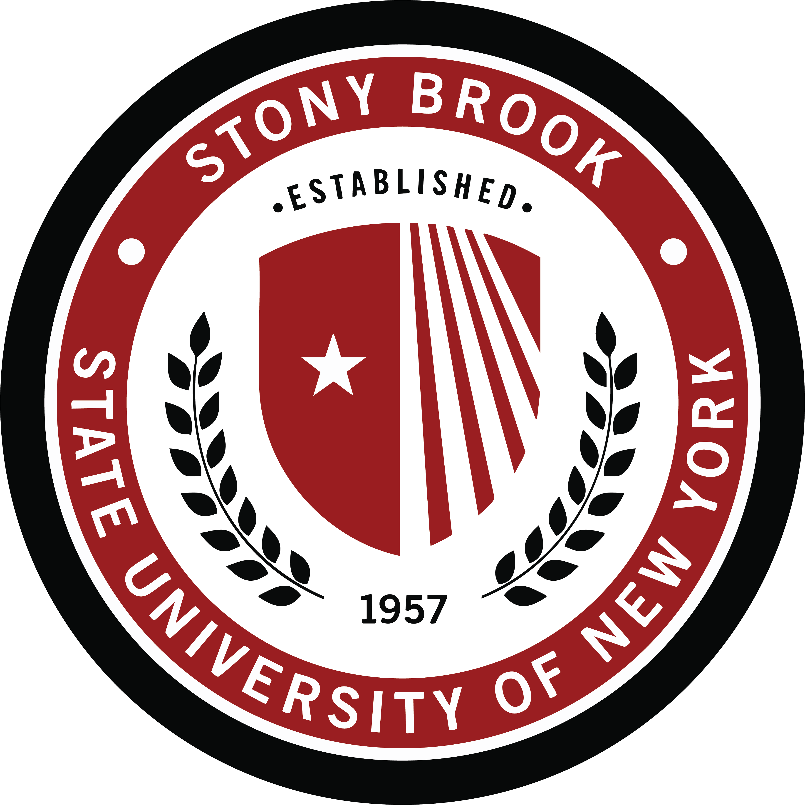
Binghamton university situated north of New York has it’s own bike scheme that allows students to rent out bikes for free (2 hours free and then charged afterwards). Whilst not extremely large in operating scale (with 30 bikes scattered across 4 stations around campus), Binghamton is one of the few universities which have launched its own standardized branded bikes, mimicking that of larger bikeshare firms like Citibik (Binghamton University).
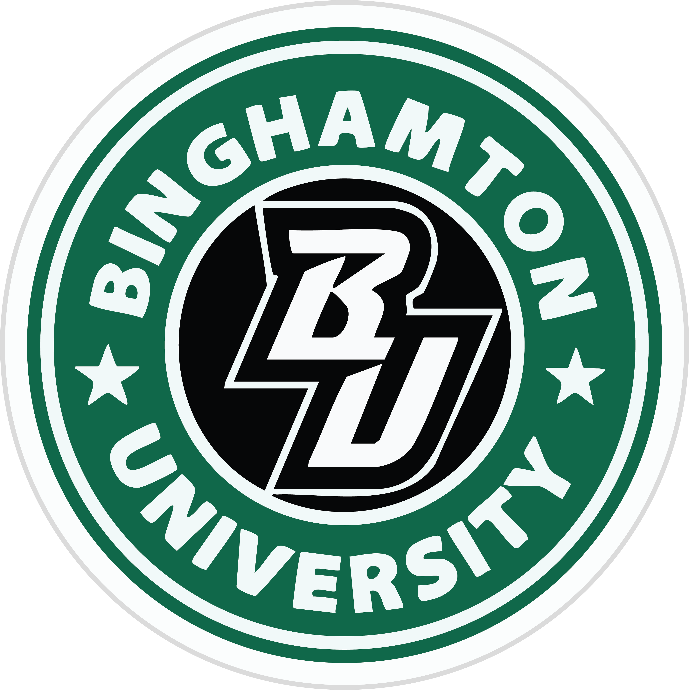
NEW YORK UNIVERISTY
Whilst there are currently no active bikeshare programs at NYU, market research was conducted to understand whether introducing a bike share within NYU would be properly utilised.
In March 2025, our team collected nearly 70 survey responses from members of the NYU community on the New York City campus. Approximately 90% of respondents were students, either commuters or those living in on-campus housing, while the remaining 10% consisted of staff and administrators. Around 83% of responses reported using walking or the subway as their primary means of transportation in and around the city. While 84% indicated they currently never use Citi Bike, a striking 87% said they would be more likely to use the service if changes were made, such as lower costs or subsidized memberships, more Citi Bike stations near NYU buildings, safer bike lanes and traffic regulations, and increased education on bike safety and city biking laws. Notably, 64% of respondents believe Citi Bike should be free for all NYU students, and 55% said they would bike more often if such a program were implemented. The data shows that if NYU took more steps to advocate for and implement improvements in biking, whether financial or safety-related, students would be more inclined to adopt sustainable transportation practices.
One promising initiative NYU could adopt to promote sustainable transportation is launching its own bike rental program exclusively for students, faculty, and staff. With a simple ID-based check-out system, members of the NYU community could borrow a bike from designated campus hubs and return it after use, ensuring accessibility and accountability. Each rental would come equipped with a secure lock and optional helmet to prioritize safety and convenience. This program would not only provide a reliable alternative to short car or subway trips, but also help reduce campus-related emissions and ease congestion around NYU buildings. Additionally, NYU could partner with Citi Bike to offer subsidized memberships, making city-wide bike access more affordable for students. By integrating both a campus-specific system and expanded public bike access, NYU can take a significant step toward a cleaner, healthier, and more climate-conscious campus culture.
An effective solution would be for NYU to partner with Citi Bike to offer subsidized memberships, making citywide bike access more affordable for students. By collaborating with an established bike-sharing provider, NYU could enhance transportation options for its community without taking on the operational responsibilities of managing its own bike rental system. This initiative would also better connect students to the broader New York City area, supporting NYU’s idea of the city being an extension of its “campus.” Affordable access to Citi Bike would empower students to explore, commute, and engage with the city in a more sustainable and health-conscious way.
Though our solution might take a year or so to implement, there are steps you can take right now to help. Firstly, you can sign our petition that advocates for NYU collaborating with CitiBike. This will hopefully bring attention to our solution and start to get NYU administrators on board. You can also start biking on your own! Whether you buy a bike or use bike share programs around campus, biking to and from class can help the climate and start to make a NYU biking program more necessary. Lastly, you can advocate for NYU biking on your own. We hope to create clubs that you can join. By joining a club, or advocating on your own, you can bring more attention to this issue and make the solution more feasible. As the months warm up, we hope to see more NYU students biking with us on the streets of New York.